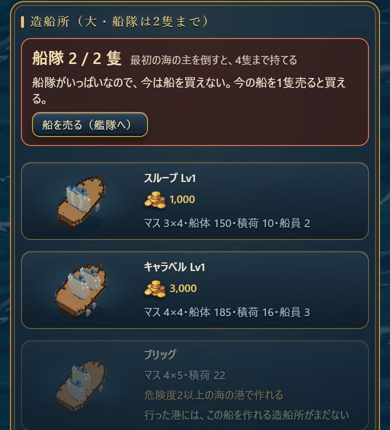
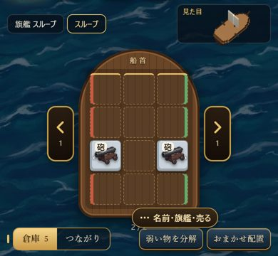
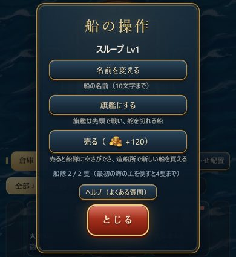
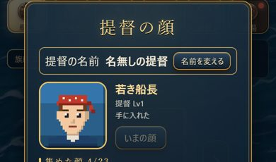

HELP / FAQ
ヘルプ（よくある質問）
船組みハクスラ 大航海 2026年11月28日 更新
SHIPYARD新しい船が買えない
船は港の「造船所」タブで買えます。買えない時は、次のどれかに当たっています。
- 船隊がいっぱい：最初の海の「海の主」を倒すまでは、船は2隻までです。倒すと4隻まで持てます。いっぱいの時は、今の船を1隻売ると買えます（売り方は下へ）。1.0.3 からは、造船所の一番上に「船隊 2 / 2 隻」と出て、「船を売る（艦隊へ）」ボタンから売る画面へ行けます。
- 港の造船所が小さい：大きな船は、大きな造船所のある港でしか作れません。作れない船は灰色の札になり、作れる港の条件が書いてあります（1.0.3 からは「作れる港（行った港）」も出ます）。
- 金貨が足りない：交易や海戦で金貨を貯めてください。

FLEET船を売る・船の名前を変える・旗艦を替える
- 港の「艦隊」タブを開きます。
- 船のマスの左右の矢印で、操作したい船を選びます。
- 船の右上の「… 名前・旗艦・売る」を押します。
- 「名前を変える」「旗艦にする」「売る」から選びます。売る時は、確認でもう一度押すと売れます。積んでいた部品は倉庫に戻ります。
※「名前・旗艦・売る」ボタンは版 1.0.3 からです。1.0.2 以前は、艦隊の画面の下の「つながり」タブを開くと、船の情報の所に「名前」「旗艦にする」「売る」があります。App Store でアプリを更新すると新しいボタンになります。


船が1隻だけの時は売れません。旗艦は先頭で戦い、海戦で舵を切れる船です。
ADMIRAL提督の名前を変えたい
港の上の段の顔のアイコン（Lv の所）を押すと「提督の顔」の画面が開きます。一番上の「名前を変える」で変えられます（1.0.3 から）。設定・交易所の「みんなの市場」・討伐戦・対人戦の画面からも変えられます。名前は10文字までです。

SEA LORD海の主が見つからない
海の主のねぐらは、はじめは隠れています。次の順で進めると地図に出ます。世界地図の上の帯に、今どの段階かが出ます。
- その海の航路で海賊を沈める（最初の海は8隻）
- 航路の最後に「賞金首」が出るので倒す
- 主のねぐらが地図に出る
- 戦力が足りれば挑める（足りない時は部品を鍛えて船を強くする）
REQUESTS依頼の種類
- 【自分で買う】：品物を自分で買い、届け先の港へ運びます。着いた時に積荷にそろっていれば完了です。
- 【預かり荷】：依頼主の荷を預かって運びます。自分の積荷とは別で、売り買いはできません。
- 海賊を沈めて戻る：決まった数の海賊を沈めて、依頼の港へ戻ります。
期限を過ぎると失敗し、依頼主の港との友好が下がります。
MATERIALS素材（研ぎ石など）の使い方
部品を選んで「効果をいじる」を押すと、素材で効果を変えられます。素材には並・上・極の3つの格があり、部品のレア度で使える格が決まります。
- 並：ふつう・レアの部品。ふつう・レアの分解や海戦で手に入る
- 上：エピック・伝説の部品。エピック以上の分解と海の主から
- 極：ユニークの部品。ユニーク・伝説の分解と世界の果ての主から
素材は交易所の「みんなの市場」でも売り買いできます。
CONTACTお問い合わせ
解決しない時は、ruby.yamamoto.ai@gmail.com までご連絡ください。わかりにくい所は、アップデートで順に改善していきます。